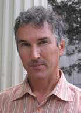

Support the Project

31 December 2007
Dear Friends,
Something special is happening at Brown University. Across the country, new research centers are being established at universities under the banner of intellectual pluralism. But many of those centers pursue the goal of diversity by affirming a particular political view they feel is underrepresented---typically, a conservative viewpoint. The Project’s approach has always been different. The PTP is sincerely committed to presenting students with a range of political viewpoints—left and right, conservative and liberal, orthodox and completely new. Rather than taking the position of outsiders offering a corrective, we at the Project have taken the bold step of claiming for ourselves the main terrain of political discourse on the Brown campus. We then define the standards of that terrain in a way that ensures that all views are presented fairly, openly and with civility.
The Political Theory Project is organic in origin and porous by design. We are organic in that the Project has arisen in response to a genuine need expressed by students at Brown. The students now at Brown want their university to be known as the place of uniquely free and serious discourse about even the most controversial political topics. The Project’s mission is to help them to create the reality from which such a reputation might spring. The Project is porous in that our activities are open to all students whatever their political viewpoint, and whether their interest in politics is passing or permanent. What we are attempting to do is difficult. To succeed, we need the energy and input of every interested Brown student.
In the Project’s few years of existence, we have already made great strides in improving the quality of political discourse on the Brown campus. But we urgently need the help of friends, parents and alums to help us continue our work. The Project has no endowment and receives no direct financial support from the University. Our programs and courses are funded entirely by gifts from generous individuals and foundations. If you are making a gift to Brown, of any size, we would be delighted if you would consider supporting the Political Theory Project.
If you would like more information on how you can help the Project, please write to PTP@Brown.edu, or use my direct email: John_Tomasi@Brown.edu. Thank you.
Sincerely,
John Tomasi
Associate Professor of Political Science and Philosophy
Director, The Political Theory Project
Brown University
Individual Donors as of June 30, 2008:
Mr. and Mrs. John A. Anderson '53, P'79, P'82
Mr. and Mrs. John H. Auld '62
Dr. and Mrs. Marvin Belsky P'78, P'79, GP'09, GP'10
Mr. Ravenel Curry
Mr. and Mrs. Richard M. Galkin '60
Mr. Philip H. Grantham ‘65
Mr. Donald Jaffin '51, P'83, P'84, P'88
Mr. Grange Johnson ‘89
Mr. Jonathan David Kantor ‘76
Mr. Peter W. Keegan ‘66
Mr. John K. Kim ‘89
Dr. Tobi B. Klar ‘76
Mr. Richard E. Kohler ‘65
Mr. Patrick Maley and Ms. Nancy Turck
Mr. Thomas F. McWilliams ‘65
Mr. Steven Price ‘84
Mr. and Mrs. Charles Primus '67
Mr. Timm R. Reynolds ‘68
Mr. David Santry
Mr. Daniel Shuchman
Mr. Daniel M. Tapiero ’90, AM ‘91
Mr. Thomas J. Tisch ‘76
Mr. and Mrs. William D. Turner ‘67
Ms. Eve L. Yohalem '89
Mr. Richard A. Young '60
Mr. Laurence Zuriff ‘89
anonymous
Foundation Donors as of June 30, 2008:
W. H. Donner Foundation of New York
Donner Canada Foundation of Toronto
Institute for Humane Studies of Fairfax, Virginia
Intercollegiate Studies Institute's Jack Miller Center
Anthem Foundation for Objectivist Scholarship
Manhattan Institute's Veritas Fund
Searle Freedom Trust
Beth and Ravenel Curry Foundation
Peggy and Adam Young Charitable Foundation
Alice M. & Thomas J. Tisch Foundation
Thomas W. Smith Foundation
Charles G. Koch Charitable Foundation